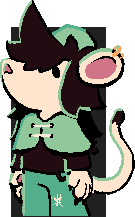

---
---

<link rel="stylesheet" href="/assets/css/photos.scss" />
<link
    href="https://fonts.googleapis.com/css2?family=Honk&family=Paytone+One&family=Rubik+Glitch+Pop&display=swap"
    rel="stylesheet"
  />
  <link
    href="https://fonts.googleapis.com/css2?family=Josefin+Sans:ital,wght@0,100..700;1,100..700&display=swap"
    rel="stylesheet"
  />

<style>

	@keyframes gradient-animation {
  0% {
    background-position: 0% 50%;
  }
  50% {
    background-position: 100% 50%;
  }
  100% {
    background-position: 0% 50%;
  }
}
	.blogImg {
	    width: 80%;
	    height: auto;
	    outline-style: solid;
	    outline-color: var(--black);
	    outline-width: 3px;
	    border-radius: 1px;
	    display: inline-block;
	    overflow: hidden;
	}
	:root {
	  	--green: #28c074;
	  	--red: #ff4062;
	  	--black: #181818;
	  	--white: #ffffff;
	  	--gray: #7a7a7a;
	  	--lightbox-background-color: rgba(0, 2, 7, 0.9);
	}
	body {
	    background: linear-gradient(133deg,#ffffff 40%,#cbffea);
  background-size: 120% 120%;
  animation: gradient-animation 30s ease infinite;
    }
    h1{
		font-family: "Josefin Sans", sans-serif;
		font-size: 70px;
		height: 90px;
		width:  412px;
		margin-bottom: 10px;
		text-align: center;
		line-height: 160%;
		vertical-align: middle;
		margin-top: 10px;
		color: var(--white);
		background-color: var(--black);
	}
table {
  table-layout: fixed;
  width: 100%;
border-spacing: 3px;
  
}
	
	td:nth-child(1) {
  	padding: 10px;
color: var(--black);
  	border-radius: 2px;
  	background-color: #dddddd;
  	width:25%;
	}
	td:nth-child(2) {
  	padding: 10px;
  	width: 75%;
  	border-radius: 2px;
  	color: var(--black);
  	background-color: #dddddd;
	}
th,
td {

  
}
	h2{
		font-family: "Josefin Sans", sans-serif;
		font-size: 17px;
		padding-left: 18px;
		padding-right: 18px;
		padding-top: 10px;
		border-radius: 3px;
		width: fit-content;

		padding-bottom: 5px;
		margin-bottom: 10px;
		text-align: left;


		margin-top: 10px;
		color: var(--white);
		background-color: var(--black);
	}
	h3{
		font-family: "Josefin Sans", sans-serif;
		font-size: 33px;
		padding-left: 18px;
		padding-right: 18px;
		padding-top: 10px;
		border-radius: 3px;
		width: fit-content;

		padding-bottom: 5px;
		margin-bottom: 10px;
		text-align: left;


		margin-top: 10px;
		color: var(--white);
		background-color: var(--black);
	}


	 /* unvisited link */
	a:link {
		padding: 2px;
		color: var(--green);
	}

	/* visited link */
	a:visited {
	  	color: var(--green);
	}

	/* mouse over link */
	a:hover {
			background-color: var(--black);
	  	color: var(--white);
	  	padding: 2px;
	}

	/* selected link */
	a:active {
	  	color: var(--green);
	} 

	.catchphrase{
		display: inline-block;
		font-family: "Josefin Sans", sans-serif;
		font-size: 20px;
		text-align: center;
		line-height: 110%;

		width:  200px;
		height: auto;
		
		padding-top: 10px;
		padding-bottom: 10px;

		margin-right: 8px;
		margin-top: 2px;

		vertical-align: middle;
		
		color: var(--white);
		background-color: var(--black);
	}
	.latest{
		display: inline-block;
		font-family: "Josefin Sans", sans-serif;
		font-size: 20px;
		text-align: center;
		line-height: 110%;

		width:  200px;
		height: auto;
		
		padding-top: 21px;
		padding-bottom: 21px;

		margin-right: 8px;
		margin-top: 2px;

		vertical-align: middle;
		
		color: var(--white);
		background-color: var(--black);
	}
	.arinPortrait{ 
		position: absolute;
		transform: scale(0.05001);
		top: -2765px; left: -1456px;
	}

	.sidebar{
		font-size: 18px;
		font-family: "Josefin Sans", sans-serif;
		line-height: 25px;

		width: 250px;
		height: 100%;
		padding: 16px;
		top: 0;
		left: 0;
		color: #f4f4f4;
		background-color: #181818;
		overflow-x: hidden;

		display: inline-block;
		position: fixed;
	}

	.mainText{
		font-family: "Josefin Sans", sans-serif;
		width: 550px;
		padding: 12px;
		display: inline-block;
		position: absolute;
		top: 0;
		left: 294px;
		min-height: calc(100% - 32px);
	}

	details > summary {
	  	margin-bottom: 0px;
	  	margin-left: 18px;
	  	font-size: 18px;
	  	line-height: 25px;
		list-style-type: '+ ';

	  	cursor: pointer;
	}

	details > summary:hover {
		
	  	cursor: pointer;
	}

	details > p {
	
	    padding: 0px;
	}
	details[open] > summary {

		list-style-type: '+ ';

	    margin-bottom: -16px;

	}
	.fakeLink{
		color:var(--green);
		text-decoration: underline;
		padding: 2px;
	}
.fakeLink:hover{
			
	  	color: var(--white);
	  	padding: 2px;

	}
</style>


{% include sidebar.html %}

	<div class = "mainText">

		

		<h3> {{ page.title }}</h3> 
		<h2> {{ page.postdate }}</h2> 
		{{content}}	
		<div><br><hr></div>
		<a href="/index"> ◀ Back </a>
		<br><br><br>
	</div>


<div id="lightbox">
    
</div>